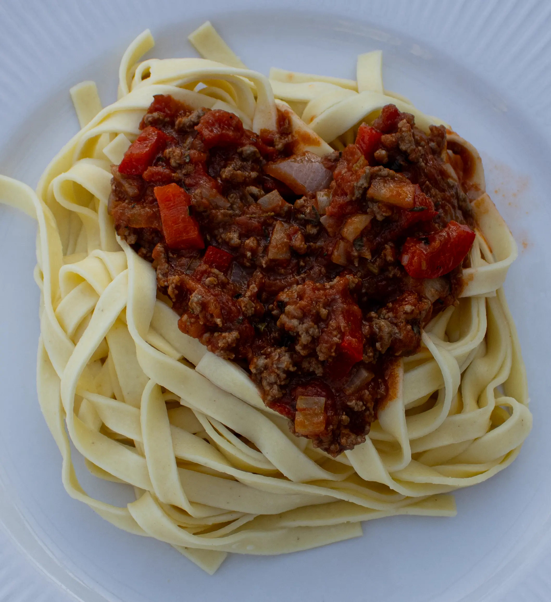

Kødfri retter:
Mange danskere spiser kød til størstedelen af deres måltider, kød er derudover hovedparten af de måltider, hvor der muligvis er nogle grønsager ved siden af. Vi ligger som land i toppen af de mest kødspisende nationer hvor det især er grise og oksekød vi spiser tæt efterfulgt af kylling.
Kød er dog meget skadeligt for klimaet, både pga. produktionen der kræver meget vand og udleder en del CO2 og fordi dyr især køer udleder metan som er skadeligt for vores ozonlag.
Kød er sundt til en vis grad, da det har mange mineraler og proteiner, dog er meget kød forarbejdet hvilket øger risikoen for visse sygdomme samt rødt kød f.eks. fra køer anbefaler sundhedsstyrelsen at man begrænser sit indtag af.